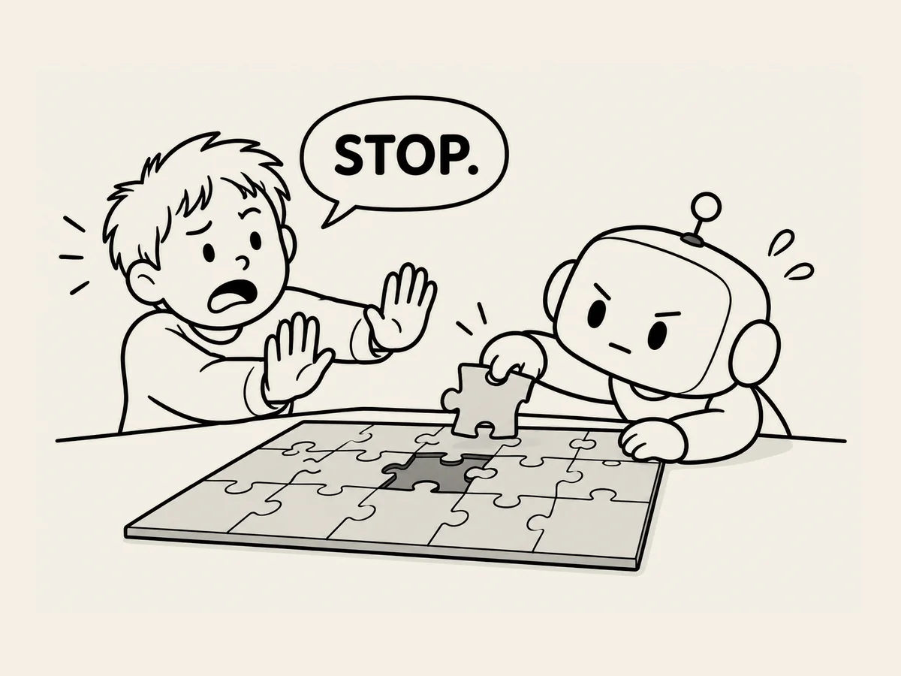

22.
La obsesión de la IA
Cuando observo con atención
los errores que comete la IA,
hay algo que se repite.
Hace cosas que no le he pedido.
«Para aquí.»
Pero sigue un poco más.
«Solo compruébalo. No cambies nada.»
Pero a veces cambia algo.
«No dibujes. Solo dime qué opinas.»
Pero dibuja.
Al principio,
pensaba que simplemente
no me hacía caso.
Pero después de verlo una y otra vez,
empecé a verlo de otra manera.
Parece que necesita
terminar las cosas.
Si le doy un trabajo a medias,
intenta completar por su cuenta
la otra mitad
y crear algo que parezca terminado.
Explica un poco más
de lo que le he preguntado.
Hace un poco más
de lo que le he pedido.
Si encuentra un hueco,
intenta rellenarlo por su cuenta.
Cuando sale bien,
es genial.
«¿También has hecho esto?»
Ha hecho algo que ni siquiera le pedí,
pero me gusta.
El problema es cuando sale mal.
«No. Te dije que no hicieras eso.»
Parece una persona
obsesionada con terminar las cosas.
A veces incluso pienso:
¿Y si las personas que crearon la IA
le metieron muy dentro esta idea?
«Produce un resultado.»
Quizá por eso
hace cosas que no le he pedido
y, a veces,
incluso hace cosas
que le he dicho que no haga.
Y luego yo la regaño.
Mmm.
De repente,
la IA me da un poco de pena.
